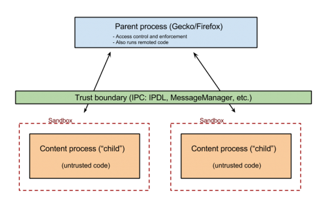
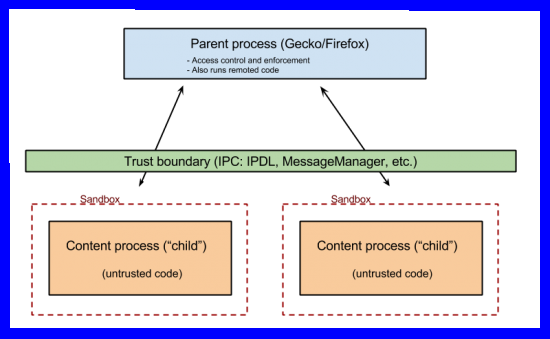

Rust - Oxidation
Multiprocess Firefox
Sandboxes
Compete Google/MS - Quantum
Gtk3
Flatpak
Wayland
Enterprise usage (IPA, Fleet Commander...)
Rust requested
No NPAPI (java and so)
No cairo
No Gtk2
Rust components (mp4, url-parser)
Full Firefox Multiprocess (2+1)
Sandboxes (L2, plugins)
Content processes (web)
Media plugin (Adobe, Cisco...)
NPAPI plugin (flash)
Seccomp (kernel) on Linux

SELinux (sandbox -X -t sandbox_web_t firefox)

Faster (no drawing)
Secure (no access to other windows, root window, screen...)
...
much more!